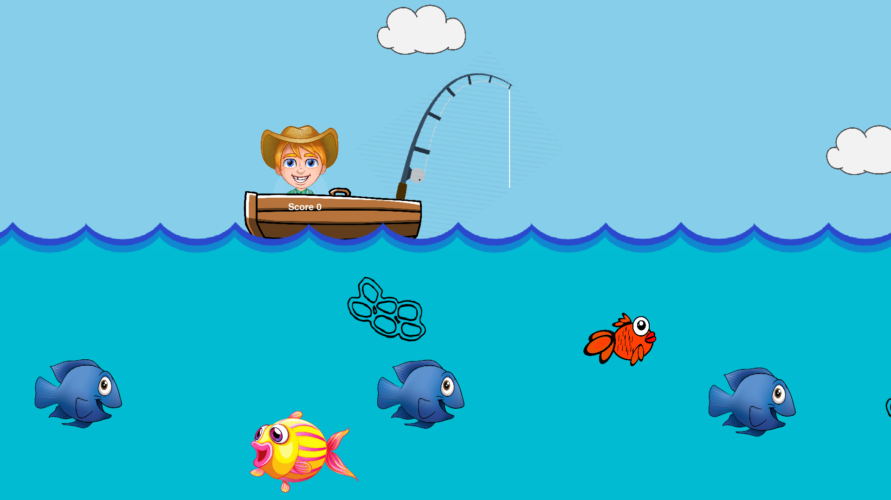
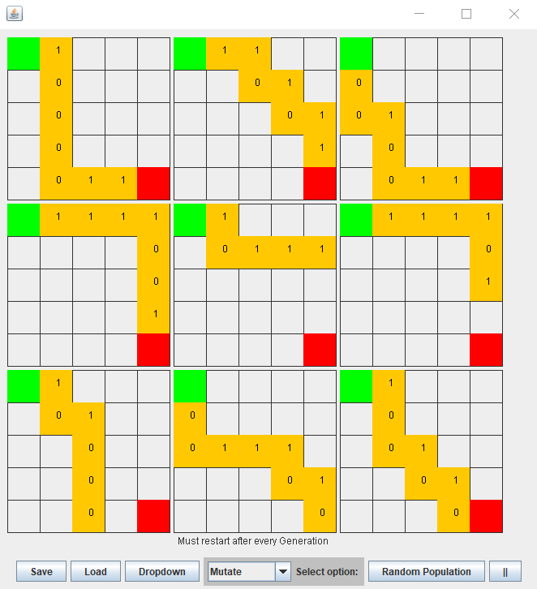
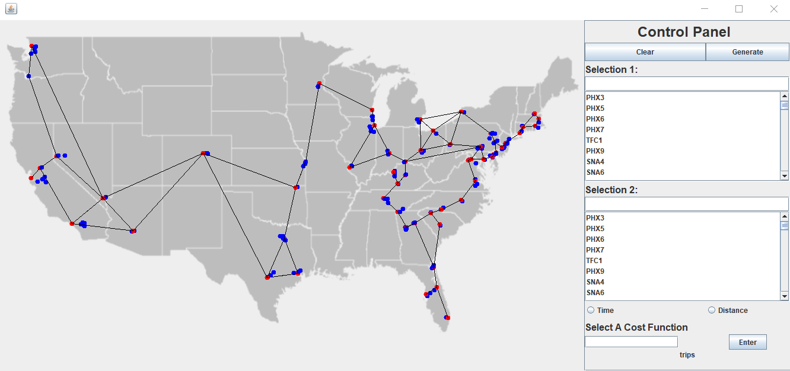

Portfolio
-
CSSE120 Project
I re-created a simple fishing game that I made a couple summers ago using python. You play as a child in a boat fishing over water. When you catch fish, you gain points, and when you collect trash, you loose points. You can pause and replay the game after time runs out. You move your character left and right and move your fishing line up and down.
-
CSSE220 Project
This is a gene-based learning algorithm that trys to complete a path in a diagonal line, and learns to do so over a number of generations of that pick either right or down randomly. You can save and load files, preform different tests on the generations, and see graphs of their progress.
-
CSSE230 Project
This is a map of all amazon fufilment centers at the time of creating it. It calculates the distance, time it would take to travel, and fastest path between either fufilment centers or cities.